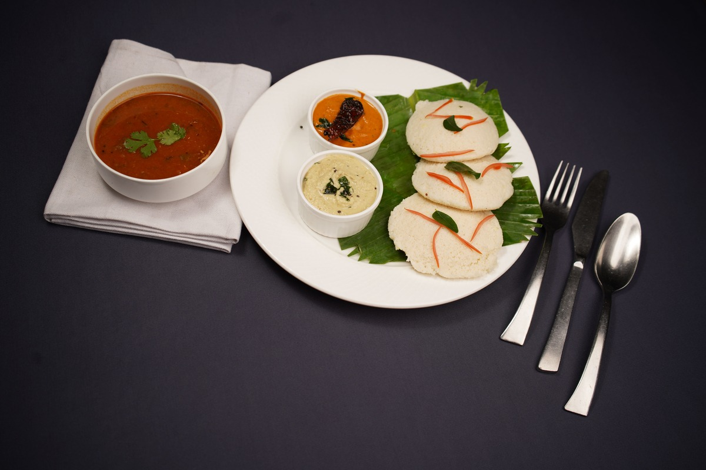

Idli Sambar

Description
Idli sambar is the quintessential South Indian breakfast. Soft, fluffy steamed rice cakes are paired with a hearty, tangy lentil and vegetable stew called sambar.
It is light, nutritious, and deeply comforting.
Ingredients
- 2 cups idli rice
- 1 cup urad dal
- 1 cup toor dal (for sambar)
- Mixed vegetables (drumstick, carrot, pumpkin, beans)
- Tamarind pulp
- Sambar powder
- Mustard seeds, curry leaves, dried red chillies
- Salt
Steps
- Soak rice and urad dal, grind to a smooth batter and ferment overnight.
- Pour the batter into idli moulds and steam for 10-12 minutes.
- For sambar:
- Pressure cook toor dal with turmeric until soft.
- Cook vegetables with tamarind and sambar powder.
- Temper with mustard seeds, curry leaves and red chillies, then mix with the dal.
- Serve hot idlis with sambar and coconut chutney.
Do not open the steamer lid until the idlis are fully cooked — steam loss makes them dense.
Idlis taste best when eaten fresh off the steamer.